Rural luxury, under famously dark skies.
An isolated modern barn conversion beside Trevibben Mill Vineyard — six boutique bedrooms, a hot tub beneath light-pollution-free skies and an on-site gym, three and a half miles from Padstow.
A country barn, scaled for gathering.
Big skies, open-plan living and room for twelve.
A vast entrance hall opens into split-level living with blue leather sofas gathered around a fireplace, a huge kitchen with a central island, and a formal dining area. Six boutique bedrooms, extensive gardens and three first-floor balconies make it a home for slow, sociable stays.
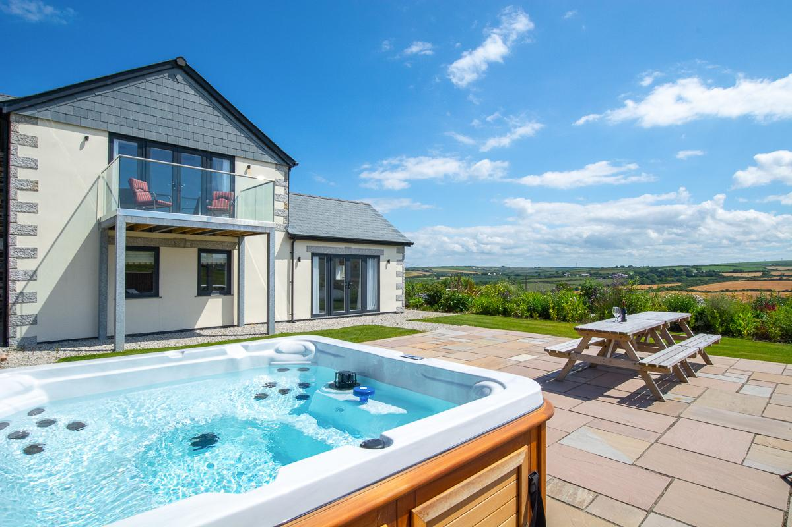
Soak under the darkest skies in Cornwall.
The hot tub is the star — set in the gardens with the barn glowing behind you and famously dark, light-pollution-free night skies above. Day or night, it's the moment the holiday really begins.
See the stay come to life.
Press play with sound for a cinematic tour of the property.
A closer look.
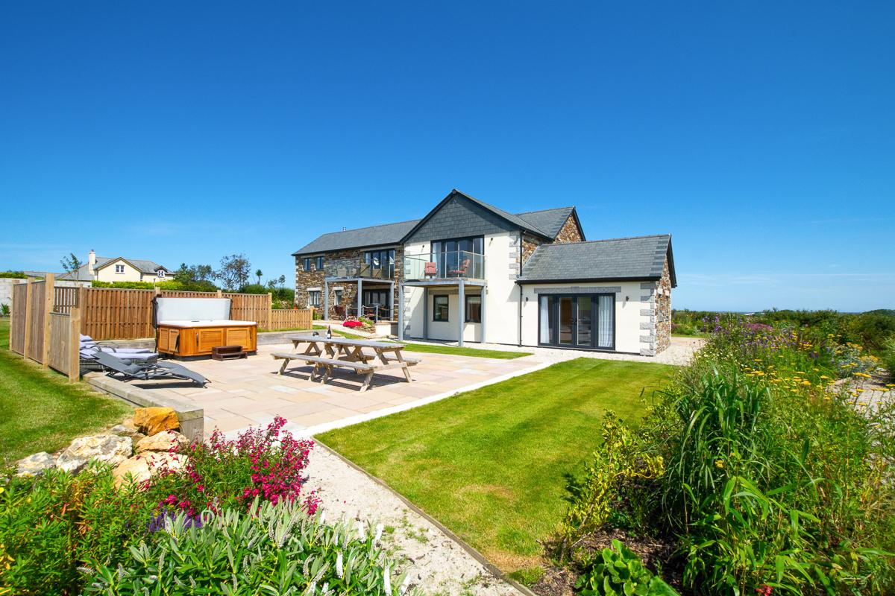
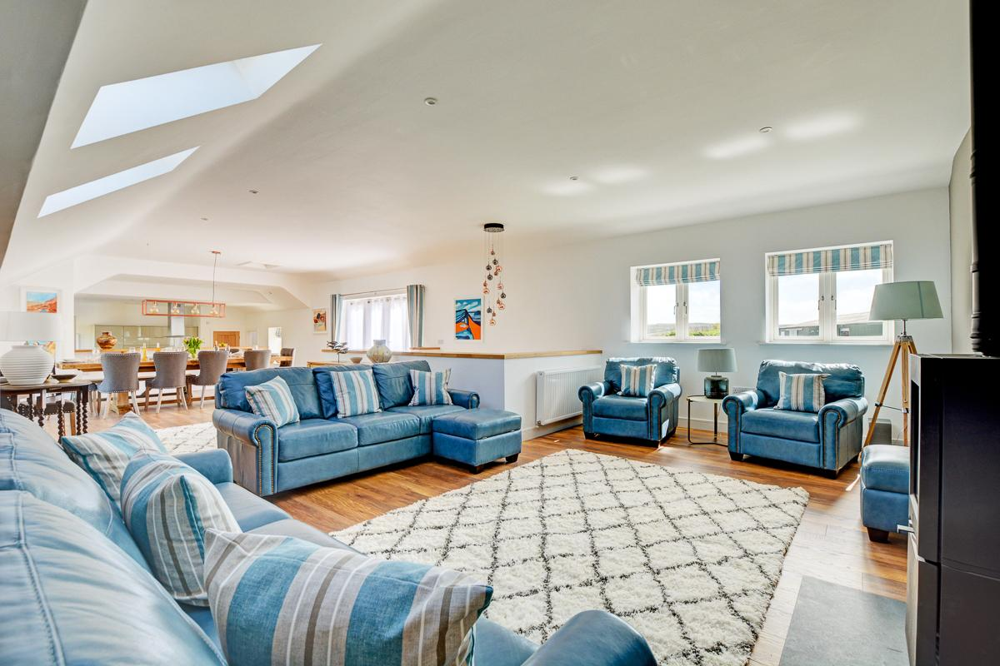
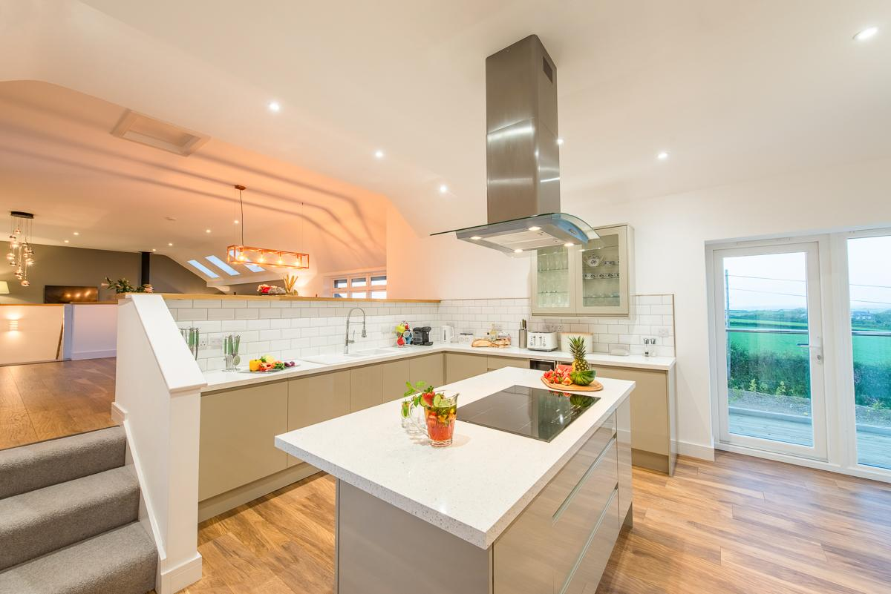

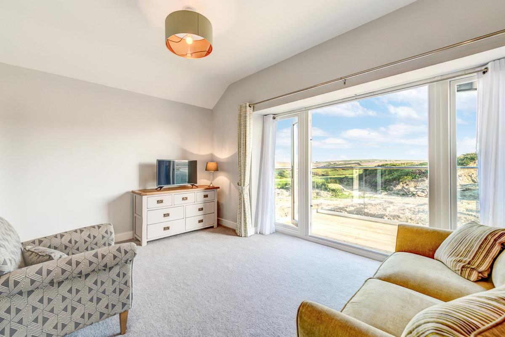
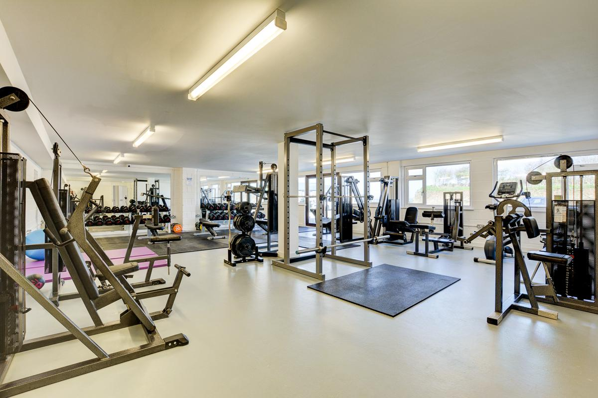
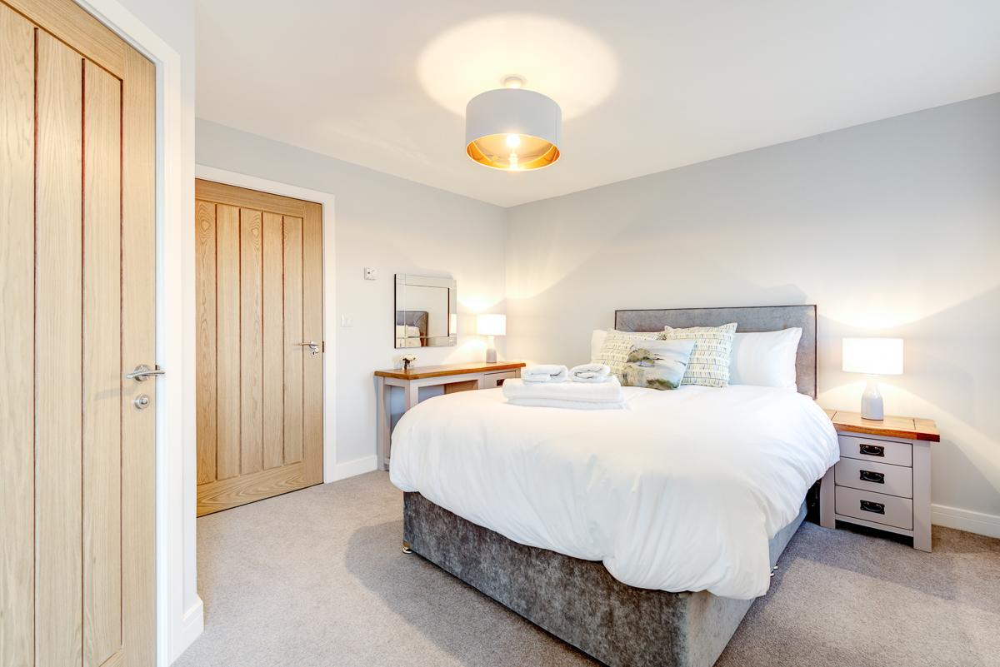
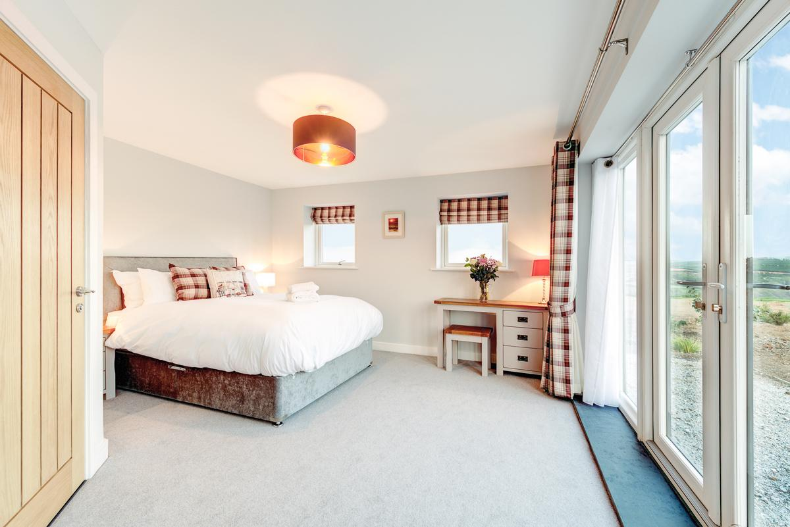
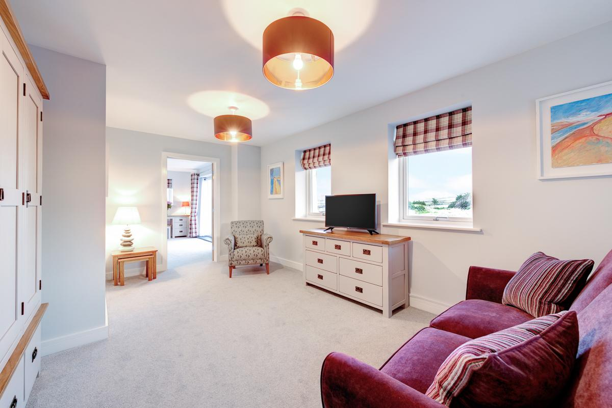
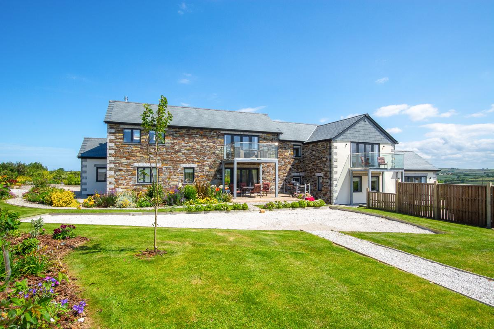
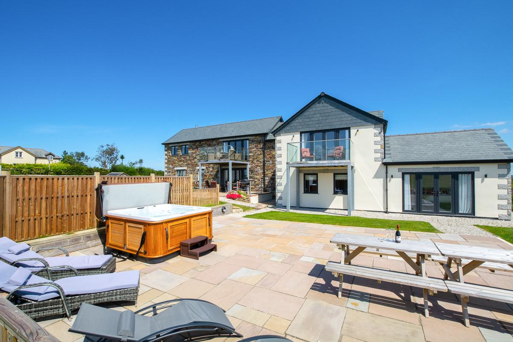
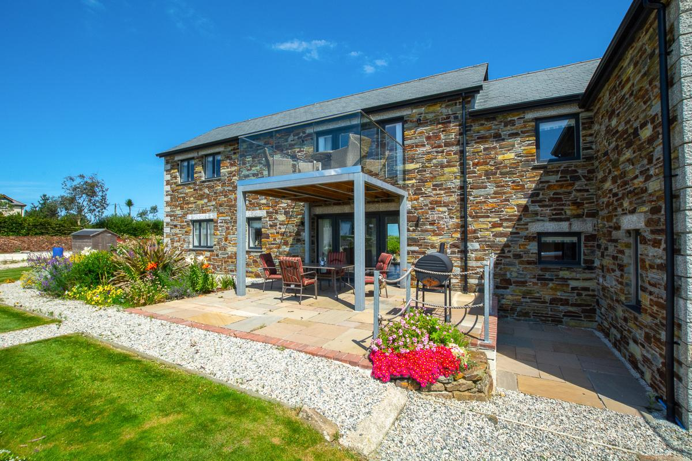

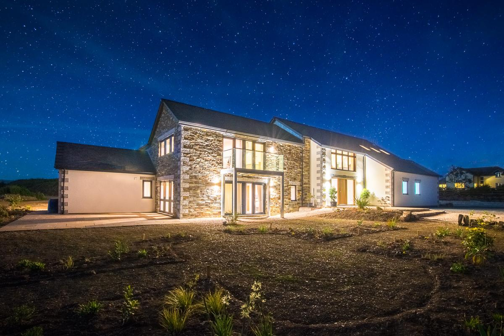
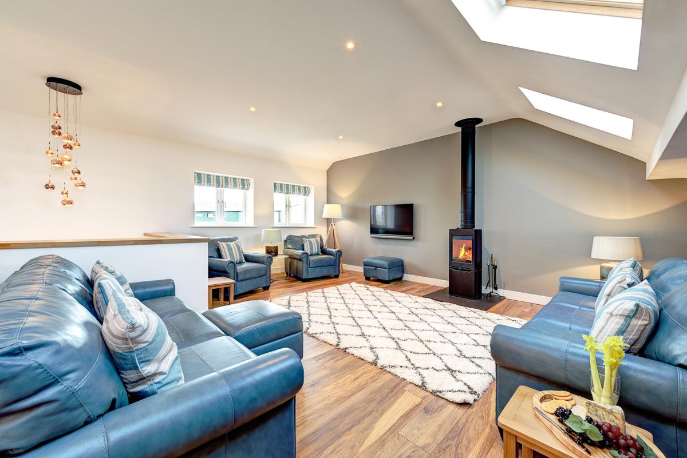
Everything you need, nothing you don't.
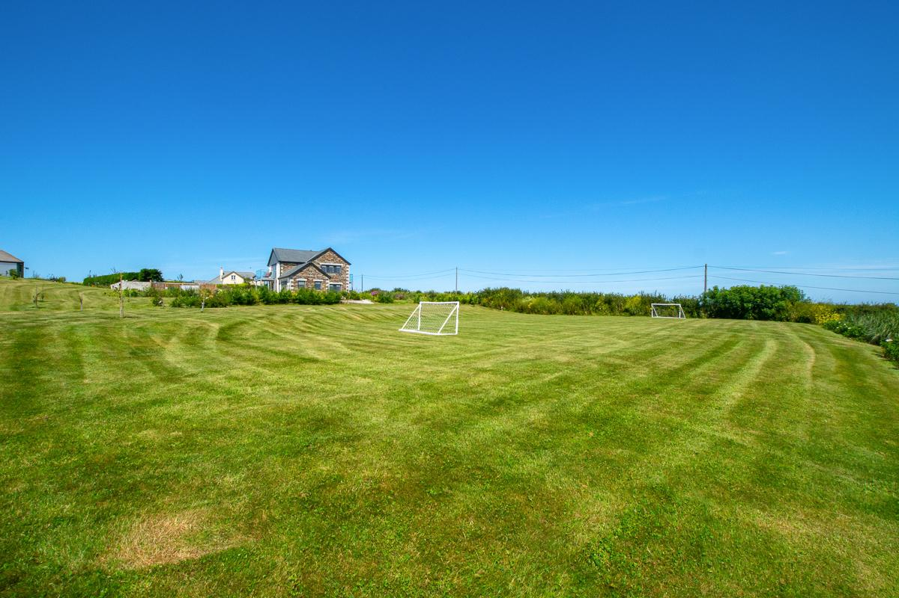
Fields, vineyard and Padstow on the doorstep.
The barn sits in isolated countryside alongside Trevibben Mill Vineyard, three and a half miles from Padstow — a working fishing port with a harbour, quayside inns and cafés. Glorious sandy beaches, coastal walking and sailing are all nearby.
Book your stay at Padstow Country Barn.
Ready to plan your stay at Padstow Country Barn? Check availability and rates on the property's booking page.